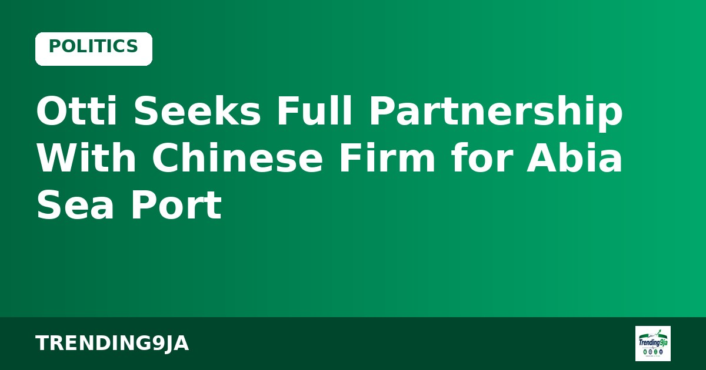

59 Graduate With First Class as AE-FUNAI Prepares for Combined Convocation
AE-FUNAI Vice Chancellor Prof. Daniel Nwachukwu has announced that 59 students earned first-class degrees ahead of the institution's combined convocation.

Abia State Governor Alex Otti wants China Harbour Engineering Company Limited to fully partner with the state government on the proposed Abia Sea Port City project, Vanguard reported. The governor indicated that the state prefers an arrangement covering everything from feasibility studies to construction and final delivery.
Governor Otti stated this during a meeting in Umuahia with a delegation from the Chinese firm led by its Managing Director, Wang Jason. The company presented preliminary findings and proposals regarding the planned seaport, which is situated around the Obuaku and Azumini axis within Ukwa East Local Government Area.
Speaking on the state's vision, Otti explained that his administration favors a public-private partnership model covering the entire lifecycle of the facility. He assured the firm of transparent business dealings, while noting that independent professional evaluations will guide the technical specifications, viability, and commercial framework of the venture.
The governor revealed that other prospective investors, including Afreximbank, have also expressed keen interest in the initiative. However, he emphasized that participation from any financial institution will depend heavily on the outcome of the feasibility assessments. He added that Abia State has enacted a 25-year development roadmap to guarantee continuity for long-term strategic projects.
In his response, CHEC Managing Director Wang Jason confirmed that the seaport project is viable and expressed the firm's eagerness for an extended relationship with Abia State. He pointed to Aba's commercial strength, adding that detailed discussions regarding business and partnership models will follow the completion of the feasibility study.
Sources: Vanguard
← More Politics storiesNigeria's trending news, politics and entertainment, straight to your email.
By subscribing you agree to our Privacy Policy. Unsubscribe any time.